📚 교수자 LMS
사용 매뉴얼
Learning Management System for Tutors
2026년 2월
1. 대시보드
교수자가 로그인 후 가장 먼저 보는 화면으로, 담당과목 현황을 한눈에 파악할 수 있습니다.
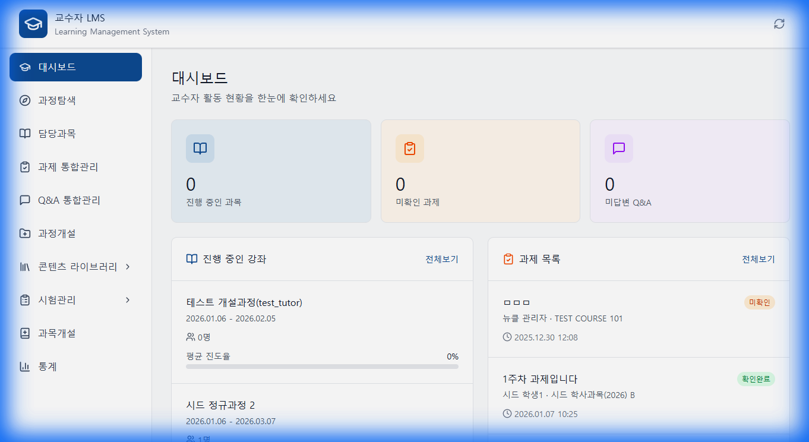
📸 대시보드 - 담당과목 현황, 미제출 과제/미답변 Q&A 알림, 최근 활동 내역, 바로가기 메뉴
| 항목 |
설명 |
| 담당과목 현황 |
현재 담당하고 있는 과목 수와 총 수강생 수를 요약하여 표시합니다. |
| 미제출 과제 |
아직 채점/피드백이 완료되지 않은 과제 제출물 건수를 표시합니다. |
| 미답변 Q&A |
학생들의 질문 중 아직 답변되지 않은 건수를 표시합니다. |
| 최근 활동 |
최근 과제 제출, 질문 등록 등의 활동 내역을 시간순으로 표시합니다. |
| 바로가기 |
담당과목, 과제관리, Q&A관리 등 자주 사용하는 메뉴로 빠르게 이동합니다. |
2. 과정탐색
시스템에 등록된 전체 과정을 검색하고 조회할 수 있는 메뉴입니다.
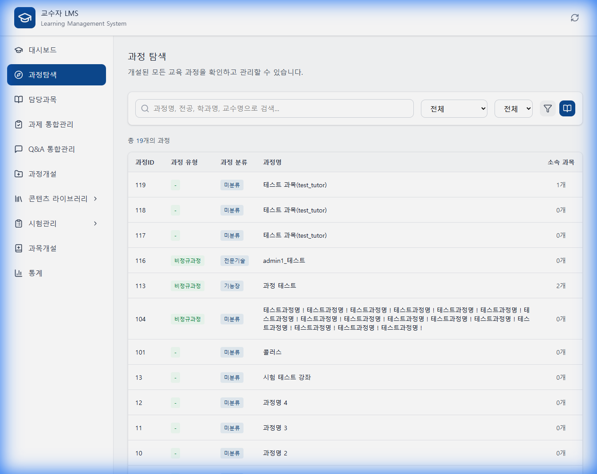
📸 과정탐색 - 전체 과정 카드 목록, 검색/필터 바, 카테고리 분류
| 기능 |
설명 |
| 과정 목록 |
전체 과정을 카드 또는 리스트 형태로 조회합니다. |
| 검색/필터 |
과정명, 카테고리, 연도 등의 조건으로 원하는 과정을 검색합니다. |
| 과정 상세정보 |
선택한 과정의 상세 정보(교육기간, 내용, 수강인원 등)를 확인합니다. |
3. 담당과목
교수자가 담당하는 과목 목록을 조회하고, 개별 과목을 선택하여 상세 관리를 수행하는 핵심 메뉴입니다.
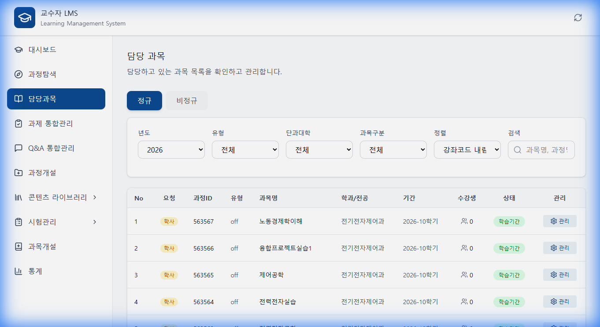
📸 담당과목 목록 - 과목명, 교육기간, 수강생 수, 과목유형(정규/비정규), 관리 버튼
| 기능 |
설명 |
| 과목 목록 조회 |
담당 중인 과목을 연도, 학기, 상태별로 필터링하여 조회합니다. |
| 과목 선택 |
특정 과목을 클릭하면 해당 과목의 상세 관리 화면으로 이동합니다. |
과목 목록에서 "관리" 버튼을 클릭하면 해당 과목의 상세 관리 화면으로 바로 이동할 수 있습니다.
📌 정규과목 vs 비정규과목 운영 차이
과목은 학사 연동 정규과목과 비정규과목으로 구분되며, 운영 방식에 차이가 있습니다.
| 구분 |
정규과목 (학사 연동) |
비정규과목 |
| 과목정보 수정 |
❌ 수정 불가 (학사시스템에서 관리) |
✅ 자유롭게 수정 가능 |
| 수강생 관리 |
❌ 추가/삭제 불가 (학사시스템에서 동기화) |
✅ 직접 추가/삭제 가능 |
| 교육기간 변경 |
❌ 변경 불가 |
✅ 변경 가능 |
| 평가기준 설정 |
⚠️ 제한적 (학사 규정 준수) |
✅ 자유롭게 설정 가능 |
| 수료관리 탭 |
❌ 표시되지 않음 (학사시스템에서 처리) |
✅ 직접 수료 처리 가능 |
| 성적 등급 |
A+~F 등급 자동 부여 |
점수제 또는 Pass/Fail |
정규과목의 과목정보, 수강생, 교육기간은 학사시스템에서 일방향으로 동기화됩니다. LMS에서는 수정할 수 없으며, 변경이 필요한 경우 학사시스템에서 처리해야 합니다.
3.1 과목정보
과목의 기본 정보와 평가/수료 기준을 설정합니다.
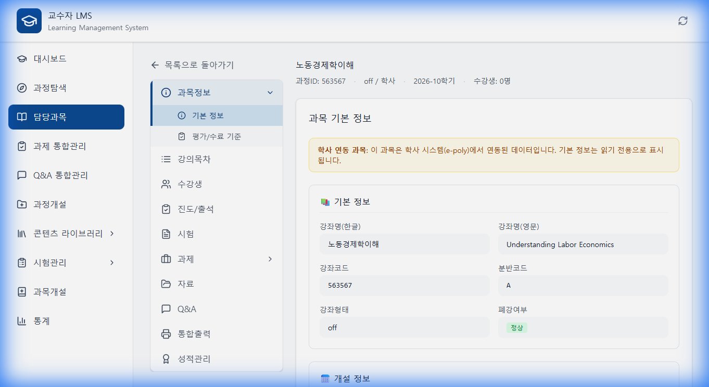
📸 과목정보 - 과목명, 과정ID, 교육기간, 수강정원, 평가/수료 기준 설정 영역
| 하위 항목 |
설명 |
| 기본 정보 |
과목명, 과정ID, 교육기간, 수강정원, 과목 설명 등 기본 정보를 확인/수정합니다. |
| 평가/수료 기준 |
출석, 시험, 과제 등 각 평가항목의 배점 비율과 수료 기준 점수를 설정합니다. |
| 수료증 |
수료증 템플릿을 선택하고, 수료증에 표시될 정보를 설정합니다. |
정규과목(학사 연동)의 경우 과목명, 교육기간, 수강정원 등 기본 정보는 학사시스템에서 동기화되므로 LMS에서 수정할 수 없습니다. 비정규과목은 모든 정보를 자유롭게 수정할 수 있습니다.
3.2 강의목차
과목의 학습 콘텐츠를 주차/차시 구조로 구성하고 관리합니다.
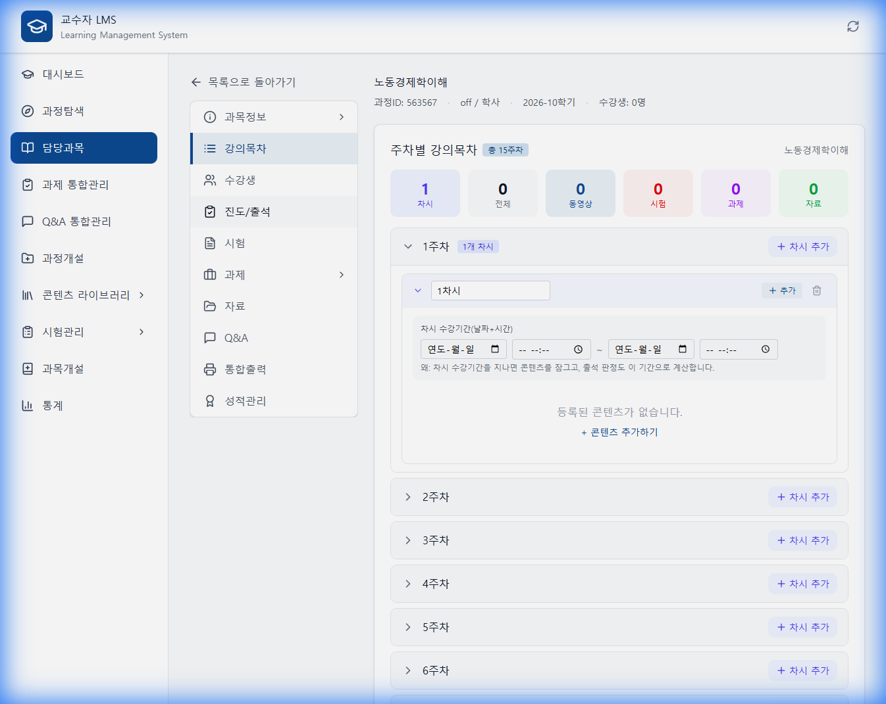
📸 강의목차 - 주차/차시 구조, 콘텐츠 추가 버튼, 드래그 정렬, 콘텐츠 유형 아이콘
| 기능 |
설명 |
| 주차/차시 관리 |
학습 단위(주차, 차시)를 생성하고 순서를 조정합니다. |
| 콘텐츠 추가 |
동영상, 문서, 시험, 과제, 외부링크 등 다양한 콘텐츠를 차시에 추가합니다. |
| 콘텐츠 가져오기 |
콘텐츠 라이브러리에서 기존 콘텐츠를 불러와 사용합니다. |
| 콘텐츠 편집/삭제 |
등록된 콘텐츠의 정보를 수정하거나 삭제합니다. |
3.3 수강생
과목에 등록된 수강생을 관리합니다.
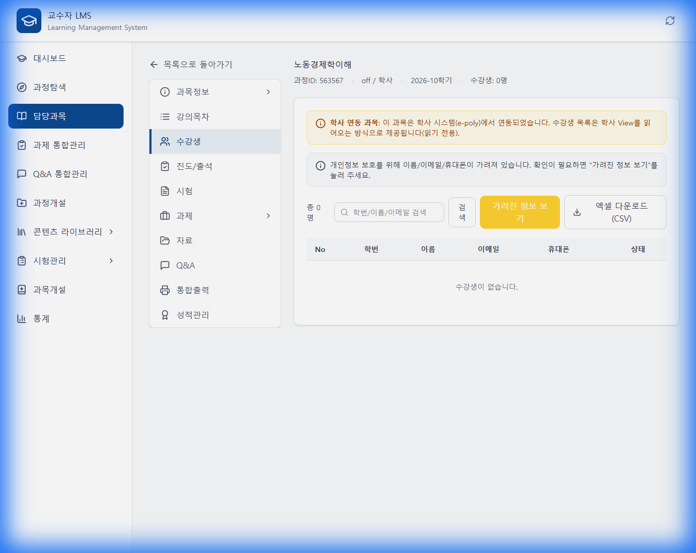
📸 수강생 - 학생 명단, 학습 현황, 엑셀 다운로드 버튼
| 기능 |
설명 |
| 수강생 목록 |
해당 과목의 전체 수강생 명단을 조회합니다. |
| 엑셀 다운로드 |
수강생 목록을 엑셀(CSV) 파일로 다운로드합니다. |
| 수강생 정보 |
개별 수강생의 학습 현황과 기본 정보를 확인합니다. |
학사 연동 과목의 경우 수강생은 학사시스템에서 동기화되므로 직접 추가/삭제가 불가합니다. 비정규 과목에서만 수강생 추가/삭제가 가능합니다.
3.4 진도/출석
수강생들의 학습 진도와 출석 현황을 확인합니다.
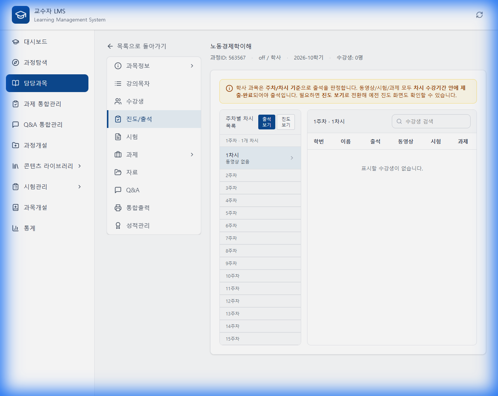
📸 진도/출석 - 수강생별 진도율 막대, 출석 상태(출석/지각/결석), 콘텐츠별 학습 완료 현황
| 기능 |
설명 |
| 진도율 조회 |
수강생별 전체 진도율과 콘텐츠별 학습 완료 여부를 확인합니다. |
| 출석 현황 |
수강생의 출석 상태(출석/지각/결석)를 조회합니다. |
| 상세 학습기록 |
콘텐츠별 학습 시간, 학습 횟수 등 상세 기록을 확인합니다. |
3.5 시험
과목에 등록된 시험을 관리하고 응시 결과를 확인합니다.
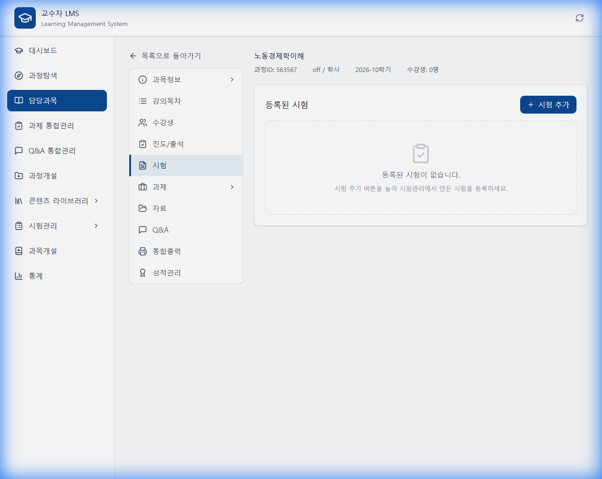
📸 시험 관리 - 시험 목록, 응시 기간, 응시자/미응시자 수, 시험 추가 버튼
| 기능 |
설명 |
| 시험 목록 |
과목에 등록된 시험 목록과 기본 정보를 조회합니다. |
| 시험 생성 |
문제은행에서 문제를 선택하여 새로운 시험을 생성합니다. |
| 시험 설정 |
배점, 응시시간, 재응시 허용 여부, 결과 공개 여부 등을 설정합니다. |
| 응시 결과 |
응시자 목록과 점수 분포를 확인하고, 필요시 점수를 수정합니다. |
3.6 과제
과제를 관리하고 학생 제출물에 피드백을 제공합니다.
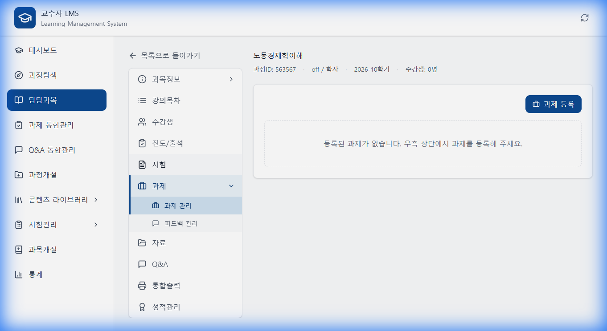
📸 과제 관리 - 과제 목록, 마감일, 제출/미제출 현황, 피드백 상태
| 하위 항목 |
설명 |
| 과제 관리 |
과제 목록 조회, 새 과제 생성, 과제 수정/삭제를 수행합니다. |
| 피드백 관리 |
학생이 제출한 과제물을 확인하고 피드백과 점수를 부여합니다. |
3.7 자료
학습에 필요한 보조 자료를 등록하고 관리합니다.
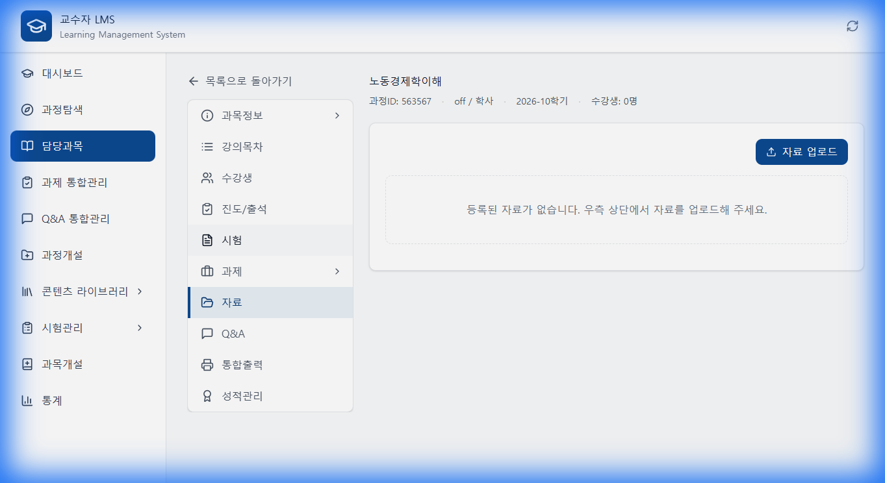
📸 자료 관리 - 학습자료 목록(PDF, 문서, 이미지), 파일 업로드/삭제 버튼
| 기능 |
설명 |
| 자료 목록 |
등록된 학습자료(PDF, 문서, 이미지 등)를 조회합니다. |
| 자료 업로드 |
새로운 학습자료 파일을 업로드합니다. |
| 자료 삭제 |
등록된 자료를 삭제합니다. |
3.8 Q&A
학생들의 질문에 답변하고 관리합니다.
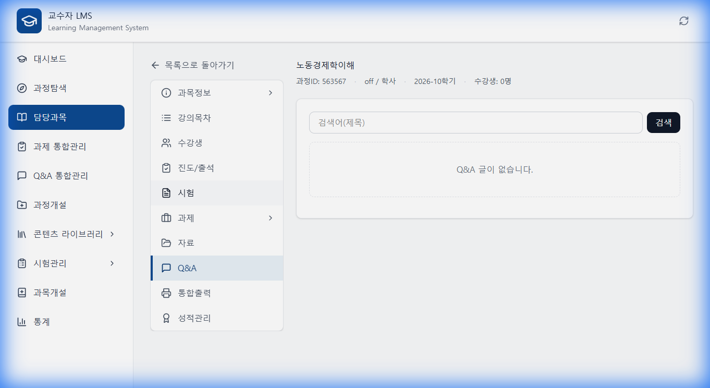
📸 Q&A - 질문 목록, 답변 상태(미답변/답변완료), 작성일, 답변 작성 버튼
| 기능 |
설명 |
| 질문 목록 |
학생들이 등록한 질문 목록을 조회합니다. |
| 답변 작성 |
질문에 대한 답변을 작성하거나 수정합니다. |
| 상태 관리 |
답변 완료, 미답변 등 질문의 상태를 관리합니다. |
3.9 성적관리
수강생의 최종 성적을 확인하고 관리합니다.
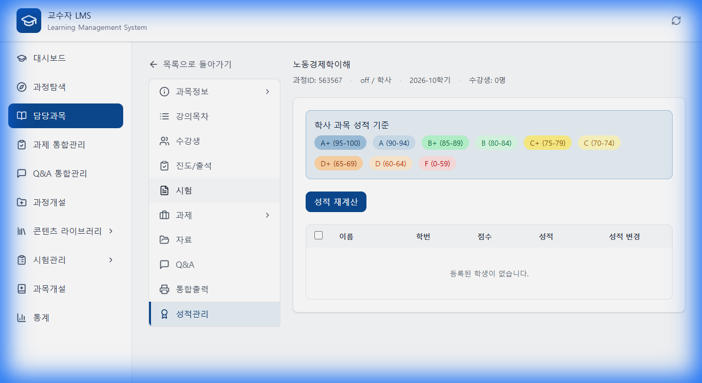
📸 성적관리 - 수강생별 출석/시험/과제 점수, 총점, 등급, 성적 재계산 버튼
| 기능 |
설명 |
| 성적 조회 |
수강생별 출석, 시험, 과제 점수와 총점을 조회합니다. |
| 평가항목별 점수 |
각 평가항목(출석, 시험, 과제 등)의 세부 점수를 확인합니다. |
| 성적 수정 |
필요시 교수자가 직접 점수를 수정합니다. |
| 엑셀 다운로드 |
성적 데이터를 엑셀 파일로 다운로드합니다. |
4. 과제 통합관리
담당하는 모든 과목의 과제를 한 화면에서 통합 관리합니다.
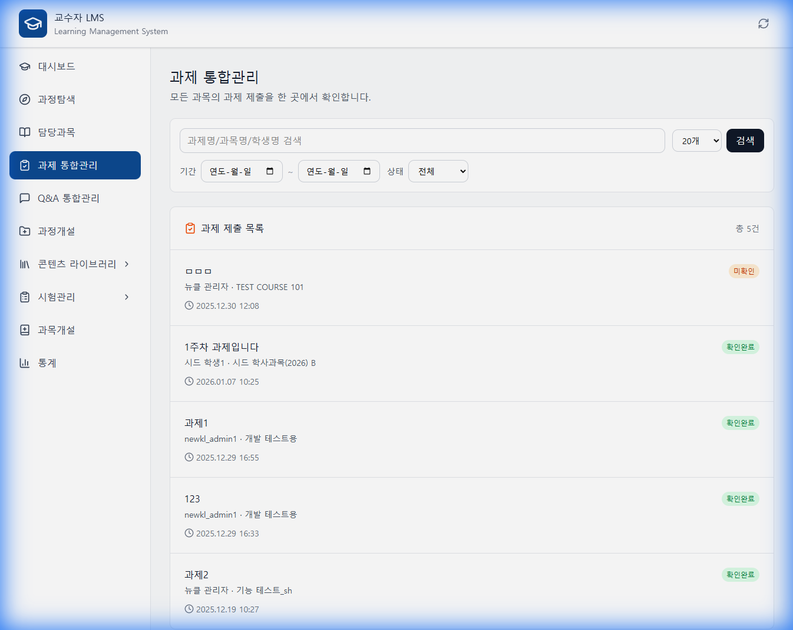
📸 과제 통합관리 - 전체 과목 과제 목록, 미채점 필터, 과목/기간 필터, 바로가기
| 기능 |
설명 |
| 통합 조회 |
모든 담당과목의 과제 제출 현황을 하나의 목록으로 조회합니다. |
| 미채점 필터 |
아직 채점/피드백이 완료되지 않은 과제만 필터링합니다. |
| 과목/기간 필터 |
특정 과목이나 기간의 과제만 선택하여 조회합니다. |
| 바로가기 |
목록에서 과제를 클릭하면 해당 과목의 과제 관리 화면으로 이동합니다. |
미채점 과제가 있으면 대시보드에서도 알림을 통해 확인할 수 있습니다.
5. Q&A 통합관리
담당하는 모든 과목의 Q&A를 한 화면에서 통합 관리합니다.
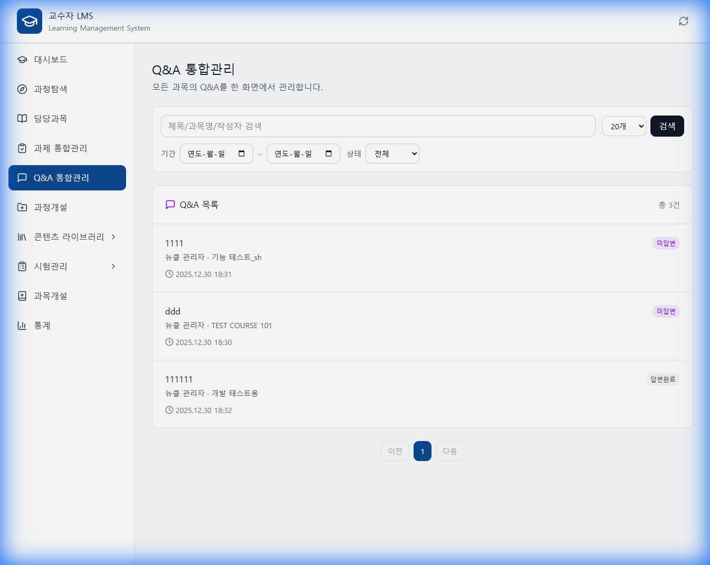
📸 Q&A 통합관리 - 전체 과목 질문 목록, 미답변 필터, 과목 필터, 답변 바로가기
| 기능 |
설명 |
| 통합 조회 |
모든 담당과목의 질문을 하나의 목록으로 조회합니다. |
| 미답변 필터 |
아직 답변되지 않은 질문만 필터링합니다. |
| 과목 필터 |
특정 과목의 질문만 선택하여 조회합니다. |
| 바로가기 |
목록에서 질문을 클릭하면 해당 과목의 Q&A 화면으로 이동합니다. |
6. 과정개설
새로운 과정(프로그램)을 생성합니다.
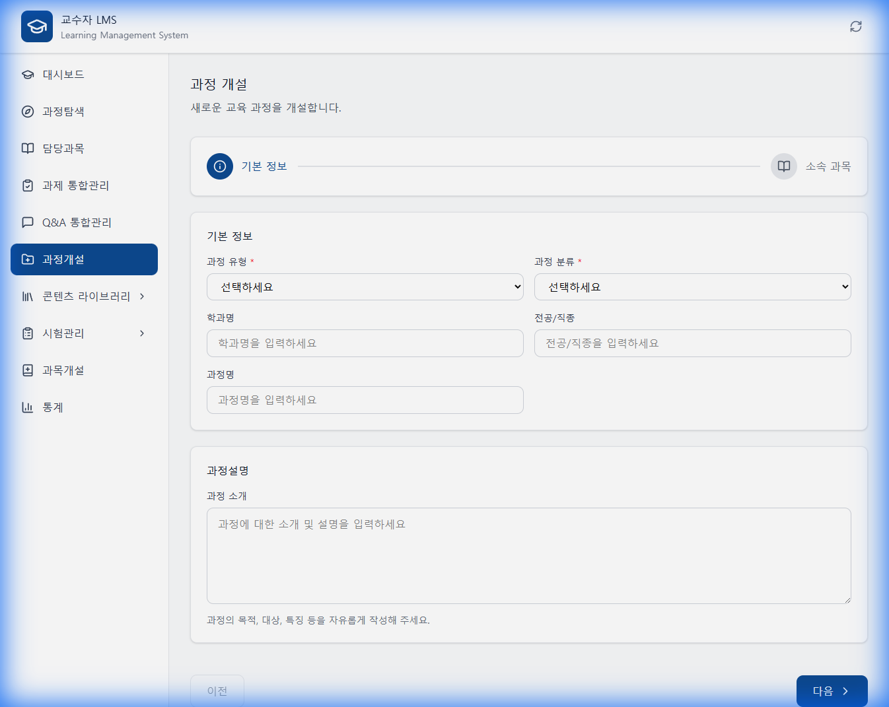
📸 과정개설 - 과정명/설명/교육기간 입력 폼, 과정 이미지 업로드, 과목 추가 영역
| 기능 |
설명 |
| 기본정보 입력 |
과정명, 과정 설명, 교육기간, 카테고리 등 기본 정보를 입력합니다. |
| 과정 이미지 |
과정 목록에 표시될 대표 이미지를 업로드합니다. |
| 과목 추가 |
과정에 포함될 과목을 추가하고 관리합니다. |
7. 콘텐츠 라이브러리
학습에 사용할 콘텐츠(동영상, 문서 등)를 중앙에서 관리합니다.
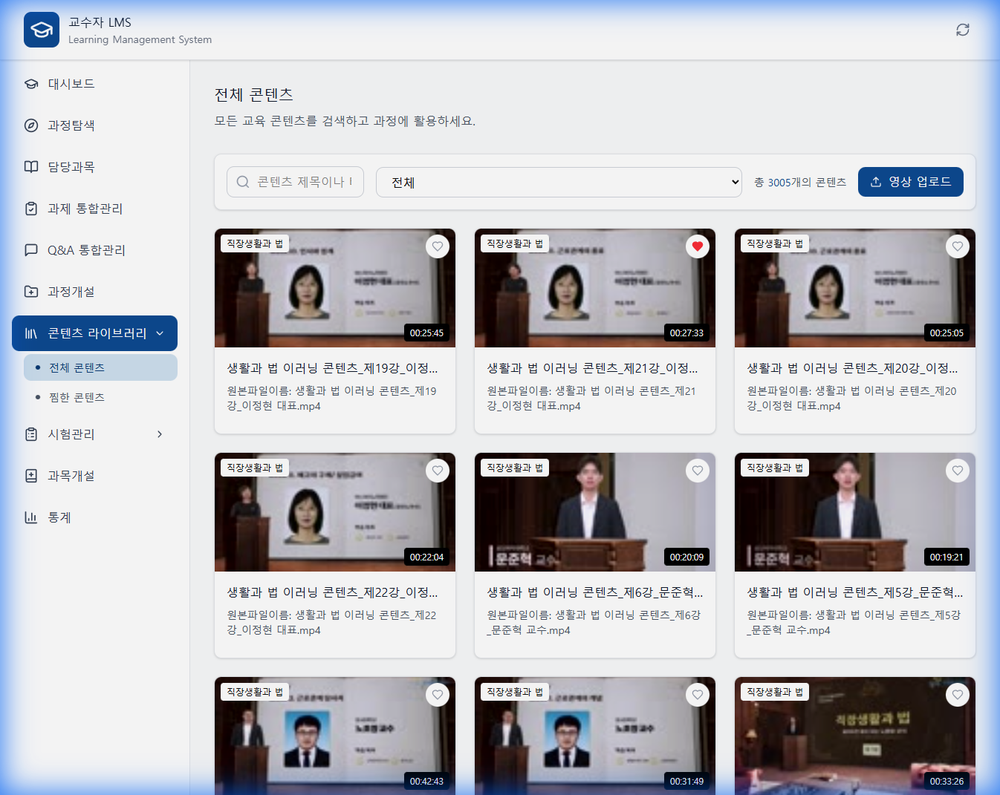
📸 콘텐츠 라이브러리 - 동영상/문서 목록, 검색/필터, 미리보기, 업로드 버튼, 찜하기 아이콘
7.1 전체 콘텐츠
| 기능 |
설명 |
| 콘텐츠 목록 |
등록된 전체 콘텐츠(동영상, 문서 등)를 조회합니다. |
| 검색/필터 |
콘텐츠명, 유형, 등록일 등으로 콘텐츠를 검색합니다. |
| 미리보기 |
콘텐츠를 미리보기하여 내용을 확인합니다. |
| 콘텐츠 업로드 |
새로운 동영상이나 문서를 업로드합니다. |
7.2 찜한 콘텐츠
| 기능 |
설명 |
| 즐겨찾기 목록 |
교수자가 찜(즐겨찾기)한 콘텐츠만 모아서 조회합니다. |
| 찜하기/해제 |
콘텐츠를 즐겨찾기에 추가하거나 해제합니다. |
8. 시험관리
문제와 시험을 체계적으로 관리하는 메뉴입니다.
8.1 문제카테고리
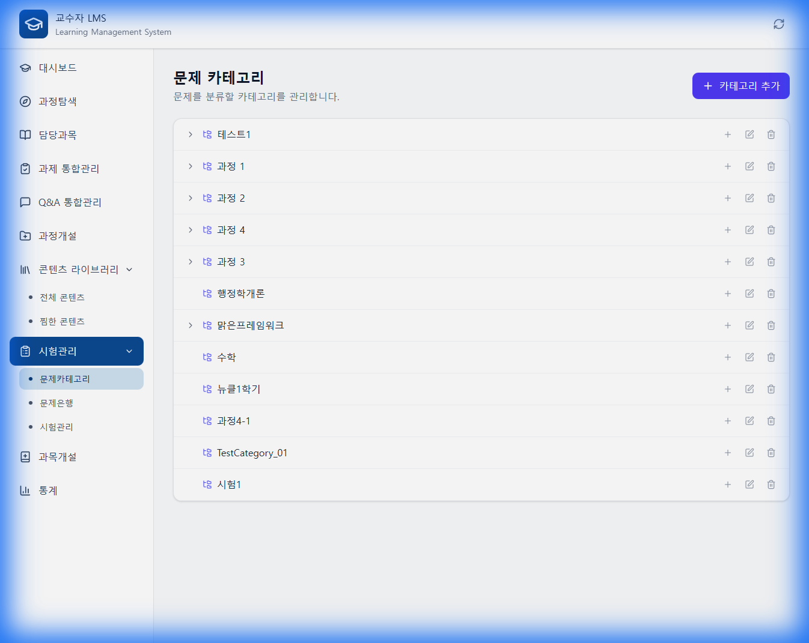
📸 문제카테고리 - 카테고리 트리 구조, 생성/수정/삭제 버튼, 상위·하위 계층 관리
| 기능 |
설명 |
| 카테고리 목록 |
문제를 분류하기 위한 카테고리 목록을 조회합니다. |
| 카테고리 생성 |
새로운 문제 카테고리를 생성합니다. |
| 카테고리 수정/삭제 |
기존 카테고리의 이름을 수정하거나 삭제합니다. |
| 계층 구조 |
상위/하위 카테고리로 계층 구조를 관리합니다. |
8.2 문제은행
시험에 출제할 문제를 등록하고 관리합니다. 다양한 유형의 문제를 미리 등록해두면 시험 생성 시 손쉽게 선택할 수 있습니다.
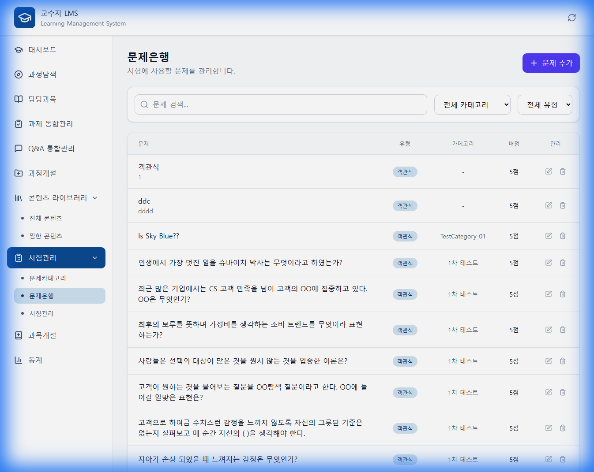
📸 문제은행 - 문제 목록, 유형별 아이콘(객관식/주관식/OX), +문제 추가 버튼, 카테고리 필터
📋 기본 기능
| 기능 |
설명 |
| 문제 목록 |
등록된 문제를 카테고리별로 조회합니다. |
| 문제 생성 |
"+문제 추가" 버튼을 클릭하여 새로운 문제를 등록합니다. |
| 문제 수정/삭제 |
기존 문제의 내용을 수정하거나 삭제합니다. |
| 카테고리 필터 |
특정 카테고리의 문제만 필터링하여 조회합니다. |
📝 문제 유형별 설명
| 문제 유형 |
설명 |
채점 방식 |
| 객관식 |
- 보기 4~5개 중 정답을 선택
- 단일 정답 또는 복수 정답 가능
|
자동 채점 |
| 주관식 |
|
수동 채점 |
| OX (참/거짓) |
|
자동 채점 |
문제 등록 시 카테고리를 잘 분류해두면 나중에 시험을 구성할 때 원하는 범위의 문제를 쉽게 찾을 수 있습니다.
9. 과목개설
단계별 마법사를 통해 새로운 과목을 개설합니다.
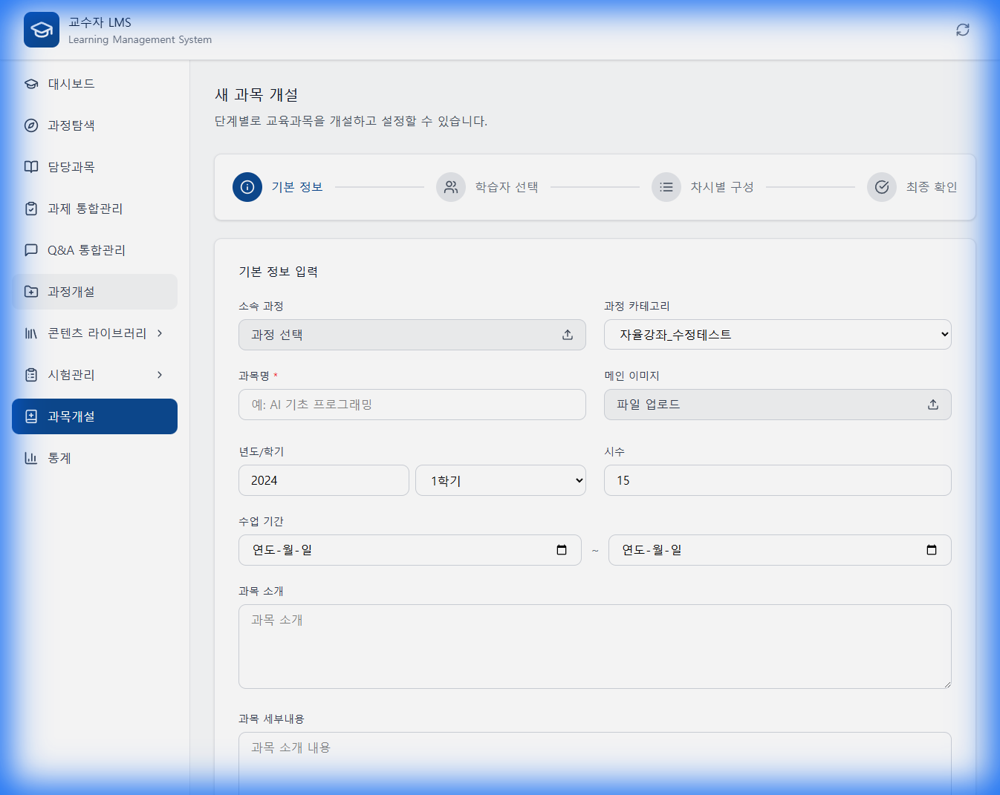
📸 과목개설 마법사 - 단계별 진행(기본정보→수강생→강의목차→최종확인), 입력 폼
| 단계 |
설명 |
| 기본정보 |
과목명, 과목코드, 교육기간, 수강정원 등 기본 정보를 입력합니다. |
| 수강생 등록 |
과목에 수강할 학생들을 등록합니다. |
| 강의목차 구성 |
주차/차시와 학습 콘텐츠를 구성합니다. |
| 최종 확인 |
입력한 정보를 확인하고 과목 개설을 완료합니다. |
10. 통계
교수자 활동 현황과 다양한 교육 통계를 제공하는 대시보드입니다.
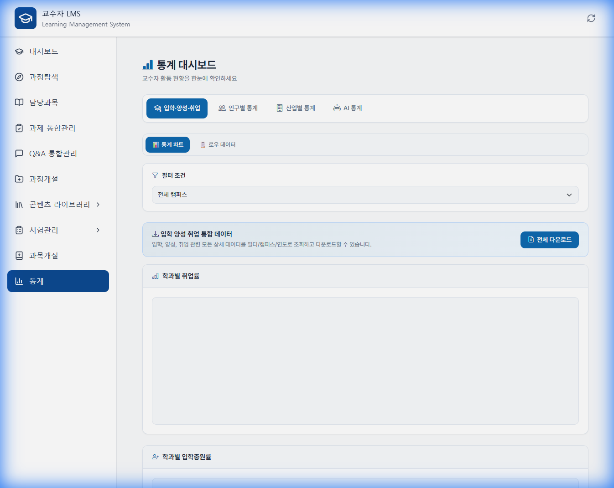
📸 통계 대시보드 - 입학·양성·취업 차트, 캠퍼스/학과별 데이터 테이블, 엑셀 다운로드
📊 탭별 제공 정보
| 탭 |
제공 내용 |
| 입학·양성·취업 |
- 통계 차트: 학과별 취업률 및 입학충원률 시각화
- 로우 데이터: 캠퍼스/학과별 상세 데이터(취업자 수, 대상자 수, 취업률 등) 테이블
- 전체 다운로드(엑셀) 기능 제공
|
| 인구별 통계 |
- 행정구역별 인구 비율과 캠퍼스 학생 비율 비교
- 연령대별 분석 지원
- 차트/표 전환 가능
|
| 산업별 통계 |
- 지역별 산업 분포(종사자)와 캠퍼스 학생 전공 분포 비교
- 기술 인력 수급 GAP 분석
- 산업단지 현황 연계
|
| AI 통계 |
- 자연어로 통계 데이터 질문 가능
- 예: "서울캠퍼스 학과별 취업률 Top 10을 보여줘"
- AI가 자동으로 차트와 표를 생성하여 답변
|
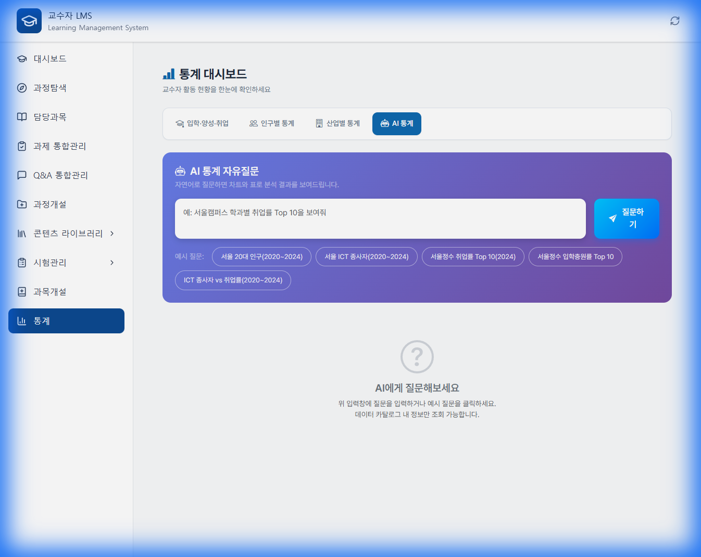
📸 AI 통계 - 자연어 질문 입력창, AI 생성 차트/표, 예시 질문 버튼
🔧 공통 기능
| 기능 |
설명 |
| 필터링 |
캠퍼스별, 행정구역별, 연도별로 데이터 범위를 선택하여 조회합니다. |
| 엑셀 다운로드 |
조회된 데이터를 엑셀 파일로 다운로드합니다. |
| 예시 질문 |
AI 통계 탭에서 제공되는 예시 질문을 클릭하면 즉시 분석 결과를 확인할 수 있습니다. |
AI 통계에서 자연어로 질문하면 복잡한 데이터 분석도 쉽게 수행할 수 있습니다. "서울 20대 인구(2020~2024)", "ICT 종사자 vs 취업률(2020~2024)" 등 다양한 질문을 시도해보세요.
11. 운영 프로세스 가이드
과목 운영 중 반복적으로 수행하는 핵심 업무의 프로세스를 단계별로 안내합니다.
11.1 시험 출제 및 채점 프로세스
문제 등록부터 시험 생성, 채점까지의 전체 흐름을 설명합니다.
📝 STEP 1: 문제 등록
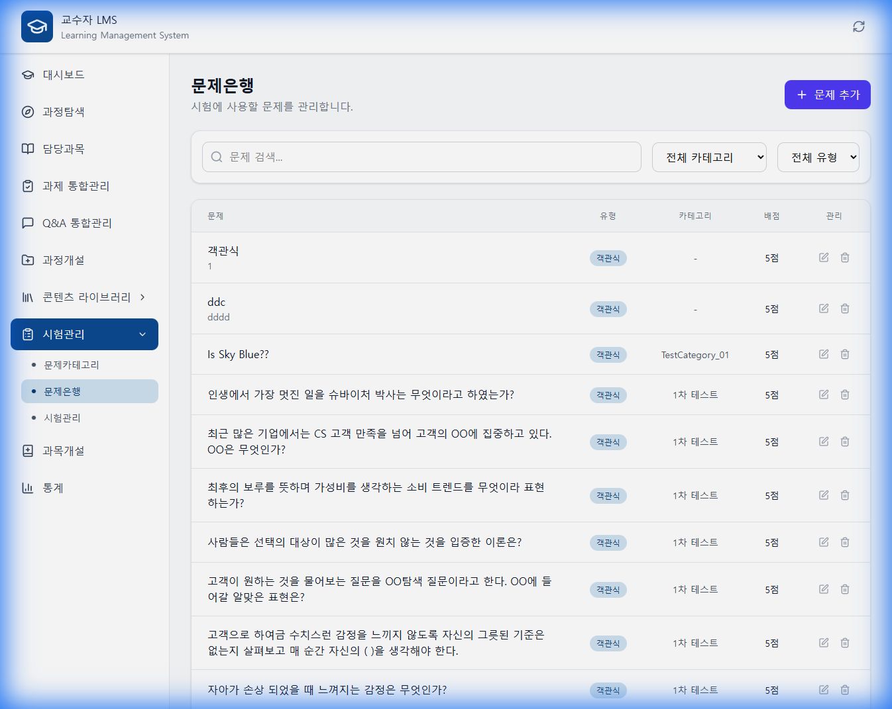
📸 문제 등록 - 문제 유형 선택(객관식/주관식/OX), 문제 내용·정답·배점 입력 폼
| 단계 |
작업 내용 |
| 1-1 |
시험관리 → 문제카테고리에서 문제를 분류할 카테고리를 생성합니다. |
| 1-2 |
시험관리 → 문제은행에서 "+문제 추가" 버튼을 클릭합니다. |
| 1-3 |
문제 유형(객관식/주관식/OX)을 선택하고 문제 내용, 정답, 배점을 입력합니다. |
| 1-4 |
여러 문제를 등록하여 문제 풀(Pool)을 구성합니다. |
📋 STEP 2: 시험 생성
시험관리 → 시험관리 메뉴에서 새로운 시험을 생성합니다.
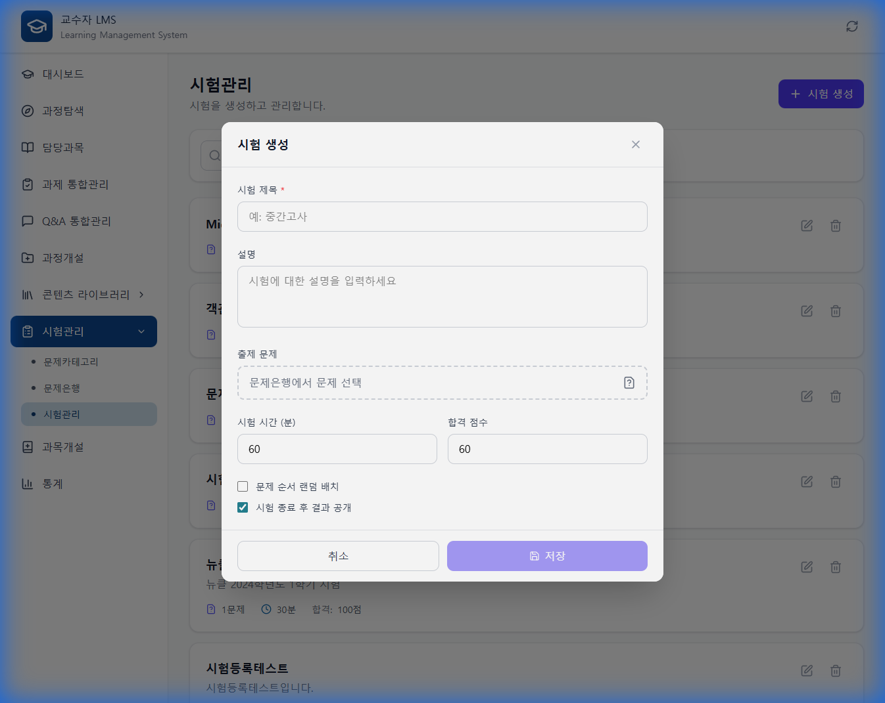
📸 시험 생성 - 시험 제목, 응시 시간, 합격 점수, 랜덤 배치, 결과 공개 설정 다이얼로그
| 입력 항목 |
설명 |
| 시험 제목 |
시험의 이름을 입력합니다. (예: 중간고사) |
| 설명 |
시험에 대한 안내 사항을 입력합니다. |
| 출제 문제 |
"문제은행에서 문제 선택" 버튼을 클릭하여 출제할 문제를 선택합니다. |
| 시험 시간 |
응시 제한 시간을 분 단위로 설정합니다. (예: 60분) |
| 합격 점수 |
합격 기준 점수를 설정합니다. (예: 60점) |
| 문제 순서 랜덤 배치 |
학생마다 문제 순서를 다르게 출제할지 선택합니다. |
| 시험 종료 후 결과 공개 |
응시 완료 후 학생에게 점수를 공개할지 선택합니다. |
📚 STEP 2-1: 문제 선택
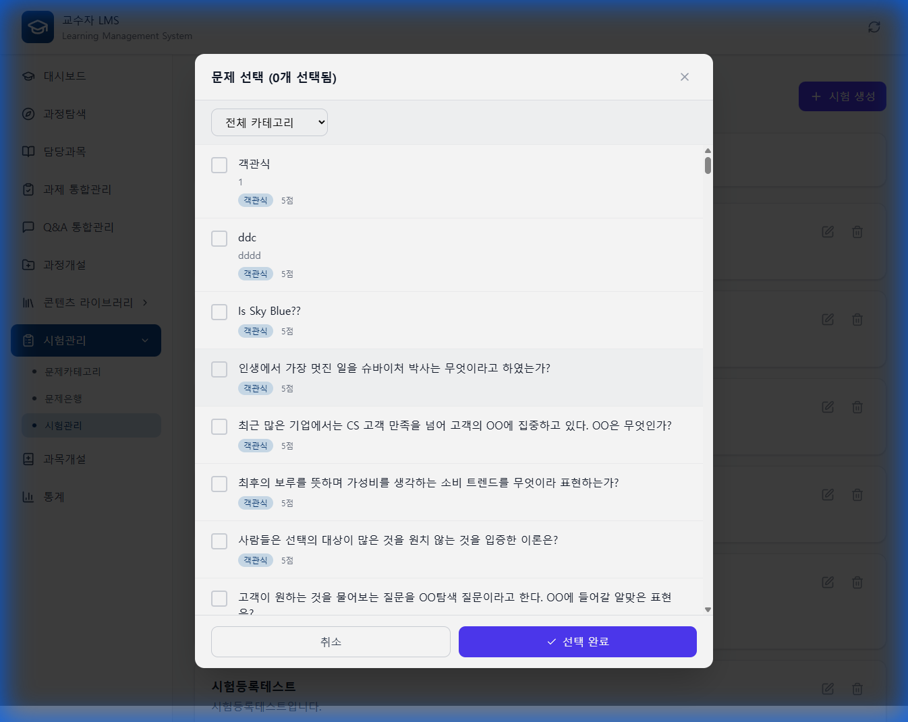
📸 문제 선택 - 카테고리 필터, 체크박스 선택, 문제 유형/배점 표시, 선택 완료 버튼
| 기능 |
설명 |
| 카테고리 필터 |
문제 카테고리별로 필터링하여 원하는 문제를 찾습니다. |
| 문제 체크박스 |
출제할 문제를 체크박스로 선택합니다. |
| 문제 유형 표시 |
각 문제의 유형(객관식/주관식)과 배점을 확인합니다. |
| 선택 완료 |
"선택 완료" 버튼을 클릭하여 문제 선택을 확정합니다. |
🔧 STEP 2-2: 과목에 시험 연결
생성된 시험을 특정 과목에 연결하고 응시 기간을 설정합니다.
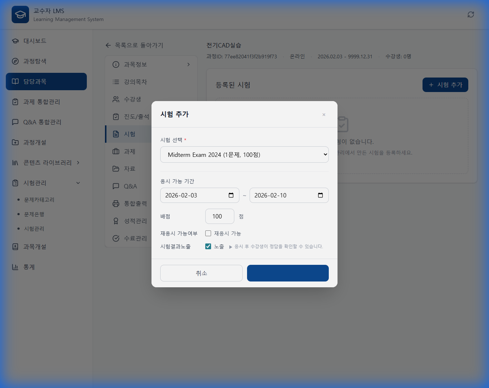
📸 시험 연결 설정 - 응시 시작/종료 기간, 제한 시간, 재응시 허용, 채점 방식 설정 폼
| 단계 |
작업 내용 |
| 2-1 |
담당과목 → [과목 선택] → 시험 탭에서 "시험 추가" 버튼을 클릭합니다. |
| 2-2 |
시험 제목, 응시 기간, 제한 시간을 설정합니다. |
| 2-3 |
문제은행에서 출제할 문제를 선택하거나 랜덤 출제 옵션을 설정합니다. |
| 2-4 |
채점 방식(자동/수동), 결과 공개 여부, 재응시 허용 등을 설정합니다. |
✅ STEP 3: 채점 및 결과 확인
| 단계 |
작업 내용 |
| 3-1 |
객관식/OX 문제는 자동 채점되어 즉시 점수가 반영됩니다. |
| 3-2 |
주관식 문제는 시험 → 응시결과에서 수동으로 채점합니다. |
| 3-3 |
필요시 점수를 수정할 수 있습니다. |
| 3-4 |
채점 완료 후 결과 공개 설정에 따라 학생에게 점수가 공개됩니다. |
시험 응시 기간이 종료되면 자동으로 미응시자의 제출이 처리되며, 채점이 필요한 경우 대시보드에 알림이 표시됩니다.
11.2 과제 운영 및 평가 프로세스
과제 등록, 학생 제출 관리, 피드백 제공까지의 흐름을 설명합니다.
📝 STEP 1: 과제 등록
담당과목 → [과목 선택] → 과제 탭에서 새로운 과제를 등록합니다.
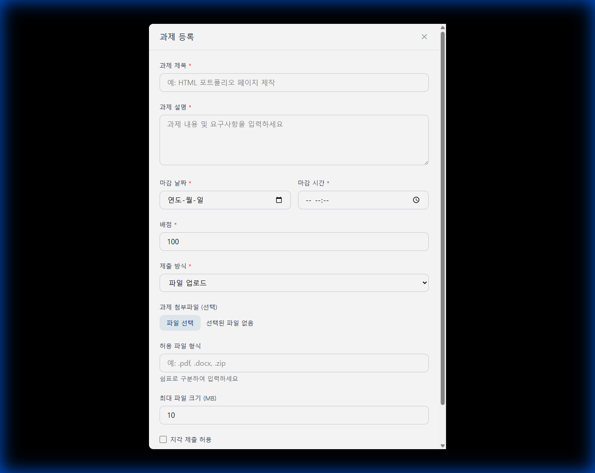
📸 과제 등록 - 과제 제목, 설명, 마감일, 배점, 제출 방식, 첨부파일 설정 다이얼로그
| 입력 항목 |
설명 |
| 과제 제목 |
과제의 이름을 입력합니다. (예: HTML 포트폴리오 페이지 제작) |
| 과제 설명 |
과제 내용, 요구사항, 작성 가이드를 상세히 입력합니다. |
| 마감 날짜 / 시간 |
과제 제출 마감일을 설정합니다. |
| 배점 |
과제의 배점을 입력합니다. (예: 100점) |
| 제출 방식 |
파일 업로드, 텍스트 입력 등 제출 방법을 선택합니다. |
| 과제 첨부파일 (선택) |
참고 자료나 양식 파일을 첨부할 수 있습니다. |
| 허용 파일 형식 |
업로드 가능한 파일 확장자를 지정합니다. (예: .pdf, .docx, .zip) |
| 최대 파일 크기 |
업로드 가능한 최대 파일 크기를 설정합니다. (예: 10MB) |
| 지각 제출 허용 |
마감일 이후에도 제출을 허용할지 선택합니다. |
📥 STEP 2: 제출물 확인
| 단계 |
작업 내용 |
| 2-1 |
마감 후 과제 → 과제 피드백 탭에서 제출 현황을 확인합니다. |
| 2-2 |
미제출자 목록을 확인하고 필요시 독촉 메시지를 발송합니다. |
| 2-3 |
또는 과제 통합관리 메뉴에서 전체 과목의 제출 현황을 한눈에 확인합니다. |
✍️ STEP 3: 피드백 및 채점
| 단계 |
작업 내용 |
| 3-1 |
학생의 제출물(첨부파일)을 다운로드하여 내용을 검토합니다. |
| 3-2 |
점수와 피드백 코멘트를 작성합니다. |
| 3-3 |
"저장"을 클릭하면 학생에게 피드백이 공개됩니다. |
| 3-4 |
채점된 점수는 자동으로 성적관리에 반영됩니다. |
마감일 이후에도 지연 제출을 허용하려면 과제 설정에서 "지연 제출 허용"을 활성화해야 합니다.
11.3 성적 산출 및 수료 처리 프로세스
평가 항목별 점수를 합산하여 최종 성적을 산출하고 수료를 처리하는 과정입니다.
📊 STEP 1: 평가 기준 설정
| 단계 |
작업 내용 |
| 1-1 |
과목정보 → 평가 기준 탭에서 평가 항목과 배점 비율을 설정합니다. |
| 1-2 |
예: 출석 20% + 시험 50% + 과제 30% = 100점 만점 |
| 1-3 |
수료 기준 점수(예: 60점 이상)를 설정합니다. |
🧮 STEP 2: 성적 산출
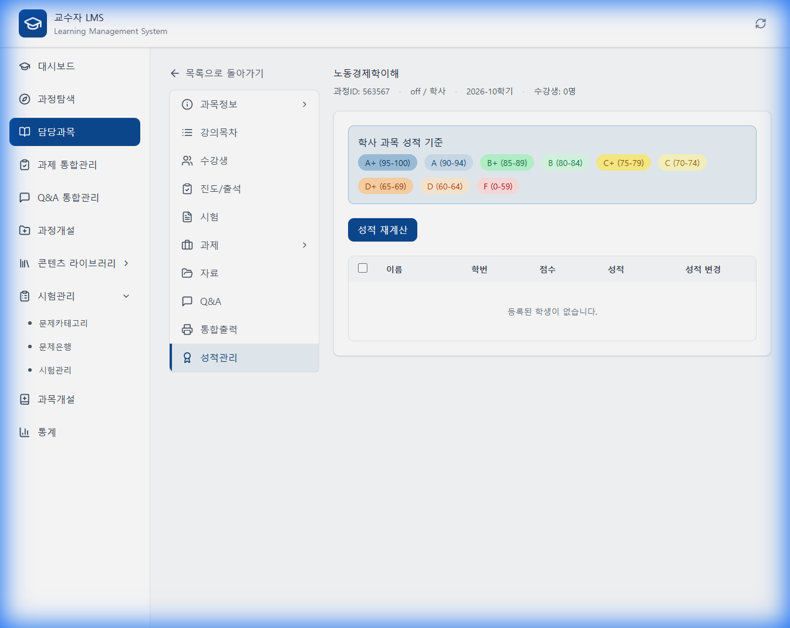
📸 성적 산출 - 출석/시험/과제 점수 합산 테이블, 성적 재계산 버튼, 등급 자동 부여
| 단계 |
작업 내용 |
| 2-1 |
성적관리 탭에서 "성적 재계산" 버튼을 클릭합니다. |
| 2-2 |
출석, 시험, 과제 점수가 자동으로 합산되어 총점이 계산됩니다. |
| 2-3 |
필요시 개별 학생의 점수를 수동으로 조정할 수 있습니다. |
| 2-4 |
학사 과목의 경우 A+~F 등급이 자동으로 부여됩니다. |
🎓 STEP 3: 수료 처리
| 단계 |
작업 내용 |
| 3-1 |
수료관리 탭에서 수료 기준 충족 여부를 확인합니다. |
| 3-2 |
수료 대상자를 선택하고 "수료 처리" 버튼을 클릭합니다. |
| 3-3 |
수료 처리가 완료되면 학생은 수료증을 발급받을 수 있습니다. |
| 3-4 |
미수료자에 대해서는 사유를 확인하고 필요시 학습 연장을 검토합니다. |
수료관리 탭은 비정규 과목에서만 표시됩니다. 학사 연동 과목의 경우 학사시스템에서 수료/성적 처리가 이루어집니다.
교육 종료 전에 미리 성적을 검토하고, 문제가 있는 학생에게는 보충 학습 안내를 하는 것이 좋습니다.